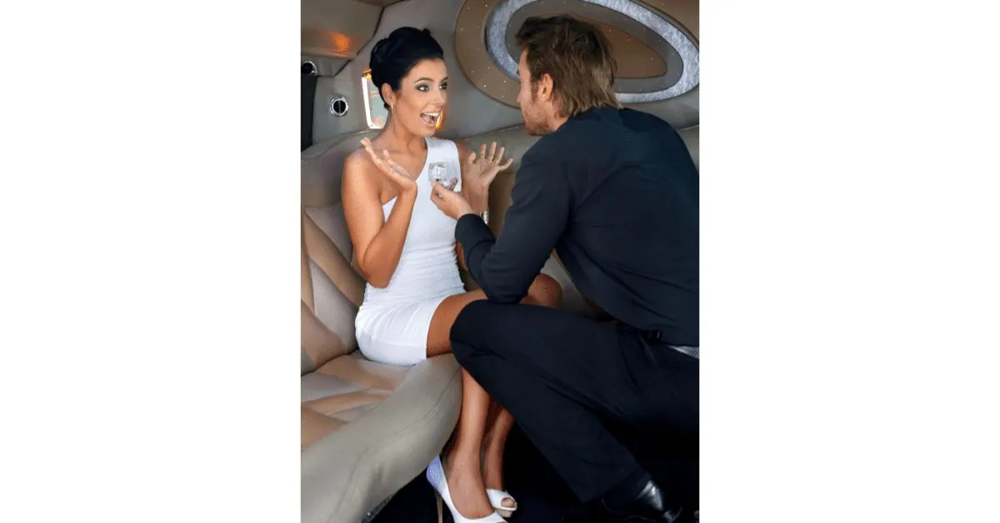

Picture this: you’re in NYC, the city that never sleeps, and the stage for countless romantic movies. Now, imagine planning the ultimate proposal in this vibrant metropolis. Sounds daunting, right? Well, I’ve got a little secret to share that can turn this nerve-wracking task into a walk in Central Park. Enter the hero of our story: limousine service NYC.
Imagine whisking your beloved away in a sleek, luxurious limo, escaping the city’s hustle and bustle. It’s not just about the destination but the journey, especially when contemplating a life-changing question like, “Will you marry me?” Now, I know what you’re thinking, “Isn’t that just for celebrities or millionaires?”
And let’s not forget the big day itself. A wedding limousine service in NYC isn’t just about pomp and show; it’s about creating a moment so special that even the most stoic New Yorker would shed a tear (discreetly, of course). So, if you’re planning to pop the question in the Big Apple, let’s dive into how a limousine service can transform your proposal from mundane to magical, making you feel like the star of your own romantic flick.
Why Choose NYC for Your Proposal?
In a city where every corner has a story, every skyline a promise, and every streetlight a flicker of possibility, there’s no question why New York City is the quintessential backdrop for a moment as monumental as a marriage proposal. It’s the city where dreams stand tall and love stories write themselves among the stars of the night and the stones of its streets. But it’s not just about the grandeur of the Empire State or the allure of Central Park’s Bow Bridge; it’s about how NYC makes you feel — alive with anticipation, brimming with adventure, and ready to embark on life’s greatest journey with the one you love.
As I share my reasons for choosing NYC for your unforgettable proposal, remember, it’s not just a place; it’s the canvas for your heart’s most sincere question. Now, let me walk you through the whys and wherefores, painting a picture so vivid that you’d almost feel the city’s heartbeat pulsing through these words.
The Romantic Backdrop of the City
Ah, the romantic backdrop of the city—there’s nothing quite like it. With every step you take on the glistening sidewalks, NYC feels like a living, breathing romantic comedy. I can’t help but reminisce about the time I wandered through the cobblestone streets of Greenwich Village, the air filled with the sweet serenades of street musicians, setting the stage for love. And let’s talk about the Brooklyn Bridge at sunset, where the sky turns into a canvas of pink and orange hues, so picturesque, you’d think it was conspiring to get you to say, “I do.”
From the charming cafes where you can toast to your future over steaming cups of coffee to the unexpected rooftop gardens that offer an oasis above the city’s frenzy, New York City has a way of wrapping you and your beloved in a cinematic embrace. Whether it’s the timeless elegance of the classics or the chic allure of the modern cityscape, NYC sets the scene for a proposal story that you’ll want to tell over and over again.
Iconic and Memorable Proposal Locations
New York City isn’t just a dot on the map; it’s a mosaic of iconic spots, each capable of hosting a proposal story that could rival any fairytale. For instance, the Empire State Building stands tall as a symbol of dreams and ambitions. I once watched a couple, eyes locked and hearts open, pledge their future to one another on the 86th-floor observatory, the city lights below bearing witness to their love. Or consider the Central Park Boathouse, where rowboats glide over the glassy lake, creating the perfect, serene moment to pop the question. And for those looking for a touch of whimsical charm, the vintage carousel in Bryant Park offers a merry-go-round of joy, an unexpected but joyously fitting place to ask for a lifetime ride together. Each location is steeped in its unique story, yet each one awaits to be part of your personal love story, promising a proposal as memorable as the city itself.
The Role of Limousine Service in Your Proposal
Now, let’s turn our attention to the unsung hero of majestic love stories: the limousine. Picture this: you step out of a sleek, black limousine, hand in hand with your partner, the city lights dancing in their eyes. This isn’t just any car ride—it’s the prologue to your forever story, a prelude to the question that will change everything. A limousine service does more than transport you from point A to point B; it weaves luxury and anticipation into the very fabric of your evening. It’s the warm, quiet cocoon amid the city’s cacophony where you can gather your thoughts, rehearse your words, and maybe even calm those jittery nerves with a toast of champagne. Each mile covered is a steady build-up to the climax of your love story, with you as the director and the limousine service as your trusted stagehand. So, as we shift gears to explore the pivotal role of a limousine in your proposal, remember, it’s not just a ride—it’s an experience, an ambiance, a cherished memory in the making.

Adding Luxury and Comfort
As you embark on the journey of a lifetime, consider the luxury and comfort that a limousine adds to the occasion. It’s about the soft leather seats that embrace you, the privacy of tinted windows offering a respite from the world outside, and the gentle hum of the engine purring through the streets of New York. I’ll never forget the plush interior that felt like a warm hug when I was a bundle of nerves, planning to ask the biggest question of my life. With a limousine, it’s as if the city is honoring your special moment, allowing you to savor the build-up to your grand gesture in a space as premium as the ring you’re about to present. The exemplary limousine service knows that it’s not just about getting to your destination—it’s about making every second count, wrapping you in an aura of elegance that says, “This moment matters.”
Elevating the Surprise Factor
And then there’s the element of surprise—the gasp-worthy heart-stopper that turns a great proposal into an epic tale. Rolling up in a limousine service undoubtedly dials up the drama, setting a stage where anything feels possible. I remember planning my own proposal; the look on my partner’s face as the sleek, black beauty of a limousine pulled up was worth every penny. It’s that cinematic moment where life surpasses the silver screen. Inside the limo, the outside world fades away, and it’s just the two of you, cocooned in a world where time stands still. It’s that thrilling pause before the curtain rises on your future. With a limousine, the ordinary becomes extraordinary, and a simple ‘yes’ becomes a resounding echo of commitment reverberating through the skyscrapers. So buckle up, my friends; let’s make your proposal a story that will be recounted with wonder for years.
Selecting the Right Limousine Service
When crafting that perfect proposal moment, the stakes are as high as the skyscrapers dotting the Manhattan skyline. That’s why selecting the exemplary limousine service isn’t just a decision; it’s a pivotal part of the plot. It’s not like picking a cab off the curb; it’s about choosing a trusted companion with you, invisibly steering your evening toward the crescendo of a “yes.” In my quest for the perfect engagement evening, I scoured the city for a limousine service that wasn’t just about luxury wheels but also about exceptional service, one that understood the importance of punctuality, privacy, and a personal touch.
Whether it’s a stretch limo decked out with roses or a classic sedan with a chauffeur who knows when to offer a comforting smile and when to disappear into the background, the right choice can turn a simple ride into an unforgettable journey. So, let’s buckle up and navigate the ins and outs of choosing a limousine service that aligns with the heart’s grandest desires.
What to Look for in a Limousine Service
When scouring the bustling streets of NYC for a limousine service, it’s like searching for that perfect slice of pizza—the one with the flawless balance of cheese, sauce, and a crust that’s just right. Similarly, the ideal limousine service should offer a harmonious blend of reliability, class, and an understanding of your unique needs. I remember the hunt for the perfect limousine service for my proposal. It had to have a reputation for punctuality because, let’s face it, timing is everything when you’re about to ask the big question. It should boast a fleet of vehicles that cater to your personal style—whether that’s sleek and modern or timeless and elegant. Customer service? Non-negotiable. They must treat your special moment with the care and confidentiality it deserves. And let’s not forget flexibility because your limousine service should gracefully handle last-minute changes in a city that thrives on the unexpected. So, take note because these are the non-negotiables when choosing a service that will carry your hopes and dreams, quite literally, to your awaiting future spouse.
Planning Your Proposal with a Limousine Service
Setting the stage for your proposal with a limousine service is like orchestrating a symphony; every detail contributes to a crescendo of emotion and elegance. With the exemplary limousine service, your proposal plan takes on a new level of sophistication. Think of the limousine as more than just transportation—it’s your secret weapon, the silent confidante that knows exactly when to arrive and when to fade discreetly into the cityscape as you take center stage. I’ve mapped out my own proposal like a military operation, with the limousine service as my ally, ensuring every moment unfolded with precision and grace. So, as we cruise through the essentials of planning your big question with the aid of a limousine service, buckle up and prepare for a ride that promises to be as thrilling as the “yes” you’re aiming to hear.
A Step-by-Step Guide
Embarking on the proposal journey in NYC, your roadmap to success is a step-by-step guide with your chosen limousine service. It starts with setting a date and time when the city’s rhythm matches the beat of your own heart—perhaps when the sunset bathes the skyscrapers in a golden glow. Next, choose the perfect spot that whispers ‘forever’—a quiet corner in Central Park, or perhaps right in the heart of Times Square, if you’re bold enough. Then, discuss your route with the limousine service; every turn and stop should be choreographed like a ballet, ensuring a smooth ride through the city’s veins. Coordinate the amenities—chilled champagne, a bouquet of roses, your song ready to play at the right moment. And finally, plan the big reveal with your limousine driver: a cue, a signal, so when you arrive, everything is as flawless as a diamond ring. With this guide, you’ll craft an evening that’s not just a proposal but a legendary love story.
Customizing the Limousine Experience
The magic is truly in the details when customizing your limousine experience for the proposal. It’s not just a ride; it’s a prelude to a lifelong commitment, and every element should sing your love story. It begins with the ambiance—soft lighting that sets the mood, a playlist of songs that trace the arc of your relationship, and perhaps even a screen playing a slideshow of your happiest moments together. The refreshments? Essential. I made sure to have our favorite chocolates and a bottle of the finest bubbly chilling in anticipation. Then there are the little touches—a hand-written note tucked into the seat pocket, the scent of fresh flowers that my partner adores, and a privacy partition for that moment of quiet anticipation before the ask. These are the threads that weave together to form the tapestry of your personalized limousine experience, each chosen by you, each a testament to the thought and care you’ve put into making this proposal as unique as your love.
The Logistics of a Limousine Proposal
Mastering the logistics of a limousine proposal is akin to conducting a well-timed dance across the city’s grand ballroom. It’s all about the behind-the-scenes orchestration that ensures your grand question plays out without a hitch. With a limousine proposal, every turn of the wheel, every glide past New York’s landmarks, every meticulously planned stop is a beat in the rhythm of your evening. I learned that clear communication with the limousine company is key; they’re the ones who map out your route to love, avoiding traffic snarls that could fray nerves on such an important day. And timing? Impeccable timing is the heart of the logistics—synchronizing your arrival with the sunset or the moment the city lights begin to twinkle. It’s about coordinating with your driver, having a Plan B for all of New York’s little surprises, and ensuring that when you reach your destination, the stage is set, the scene is perfect, and the only thing left to do is ask that life-changing question.
Coordinating with the Limousine Service
Coordinating with your limousine service is the silent drumbeat that matches the symphony of your proposal plans. It’s about forming a partnership where they’re attuned to your vision and pulse. I remember my own coordination efforts—checking in with the limousine service days before, confirming every minute detail, from the exact shade of the ribbons adorning the car to the temperature of the champagne.
On the day of the proposal, the driver was my co-conspirator, expertly navigating through the city’s veins, all while providing updates and reassurances with the subtlety of a secret agent. With a top-tier limousine service, they don’t just follow your lead; they anticipate your needs, ensuring that every red light and every crosswalk is a part of your meticulously crafted plan. Trust me, when you have a limousine service that’s as invested in your proposal as you are, you’re not just in good hands—you’re in the best hands.
Conclusion
As you stand on the brink of one of life’s most significant moments, take a breath and visualize the seamless unfolding of your proposal, empowered by expert coordination with your limousine service. Every detail you’ve envisioned, from the route that captures the essence of New York to the timing that aligns with the city’s heartbeat, has been meticulously mapped out. Move forward from the planning stages into the palpable excitement of the present, buoyed by the assurance that you’re backed by experts who appreciate the depth and delight of your purpose.
As you prepare to take this leap into your shared future, remember that your partnership with the limousine service mirrors the strength of the bond you’re about to fortify. With their expertise lighting the way, all that’s left for you is to hold your beloved’s hand, look into their eyes, and step forward into the moment you’ll cherish forever. Let the careful coordination with your limousine service clear the path to a proposal that’s as flawless as your love is boundless.
FAQs
How much does a limo cost in NYC?
The cost of a limo in NYC varies depending on factors such as the type, duration of rental, and additional services. It’s best to contact local limo rental companies for accurate pricing information.
How to book a limo in NYC?
You can book a limo in NYC by contacting a reputable limousine service provider, such as Accredited Limousine Service, and making a reservation.